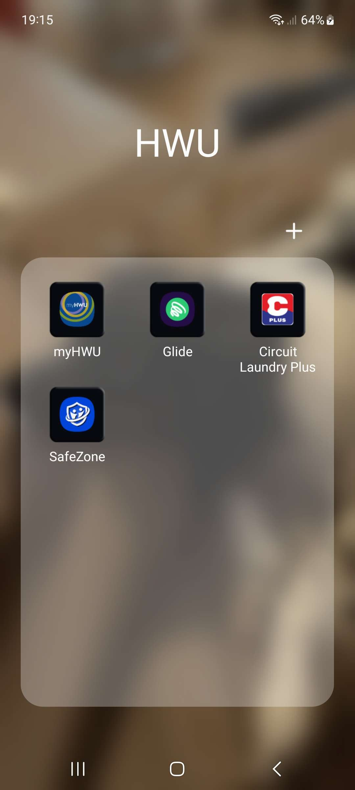

Bonjour vous !
Après les deux jours de visios (lundi et mardi) la semaine de notre arrivée, il ne s'est pas passé grand chose d'où ce regroupement.
Pour commencer, mercredi 11H, J'avais pris un rdv dans un bâtiment appelé "grid" pour récupérer ma carte d'étudiant. Aillant peur d'être en retard, je n'ai pas pris le temps de chercher mon passeport (qui était dans un sac) chose qui me posera problème plus tard. D'abord, en arrivant, je suis tombé sur des "Student Helpers" qui sont des étudiants qui aident avec les rdvs et tout. J'arrive, on me demande mon numéro H. Je met du temps à le trouver donc ils me demandent mon identifiant à la place. Ils vérifient: je n'ai pas fait ni le "online enrolment" ni le "course selection"...
N'allez cependant pas croire que je suis stupide. Enfin je le suis mais là n'est pas la question XD. Je pensais que tout serait bon car je m'étais inscrit en ligne (candidature reçue et raison pour laquelle je suis venu dans un premier temps) et j'ai déposé un formulaire de sélection des cours dans les documents comme demandé. Certains élèves avaient reçu un autre mail pour resélectionner les cours et au début je pensais qu'ils s'étaient inscrits autrement mais maintenant je commence à croire qu'ils avaient juste trouvé un bouton pour faire l'"online enrolment" à distance en fait.
L'une des étapes de l'"online enrolment" était de mettre son numéro de passeport donc j'ai dû faire un aller-retour à ma chambre (à l'autre bout du campus évidemment) pour le ramener. J'en ai profité pour terminer la paperasse sur la route et quand je suis rearrivé tout était prêt. Heureusement, les "Student Helpers" sont d'une grande aide et peuvent gérer nos rendez-vous donc ils m'ont mis un rendez-vous instantané pour la carte. J'attends 5 minutes, je vais au bureau indiqué, on me demande mon passeport et je repart très vite avec ma carte et deux autres documents: "Welcome to Heriot-Watt University" et "Making Payments: A Guide For Students".
Au passage, les "Student Helpers" m'ont fait installer une nouvelle appli ce qui fait monter la liste des applis nécessaires pour HW à 4: MyHWU (pour la paperasse), Glide (pour le wifi), Circuit Laundry Plus (pour la lessive) et SafeZone (pour les urgences) (et un authetificateur si vous n'en avez pas personnellement j'ai déjà celui de google qui marche très bien mais eux recommandent celui de microsoft) (cf screenshot en bas de blog).
Pour la lessive, il est d'ailleurs pertinent de préciser que, comme tout à Heriot Watt, elle n'est pas fournie donc les 5€ que vous claquez pour votre lessive+séchage, sachez qu'il faut en fournir tous les produits donc faites des grosses lessives.
Je suis ensuite allé au café de ResLife où j'ai retrouvé Léna et Cyril puis nous sommes allés au "pingpong & pizza party" que l'on nous a tant vanté. Il y avais une bonne cinquantaine de personnes simultanées environ au total mais 2 tables de pingpong seulement (4 raquettes). En arrivant, la pizza étant "à volonté" (il n'y en avait que 4 sur la table mais la table était trop petite pour en contenir plus donc on pensait qu'elles étaient stockées ailleurs), on en a pris 2/3 parts chacun (moi 3...) mais, 5 minutes plus tard, les organisateurs sont revenus nous voir nous demandant de rendre toute part de pizza que l'on n'avait pas touchées si on le voulait bien. Pour ma part, j'avais déjà englouti mes 3 parts mais Léna et Cyril en avaient encore 1 chacun qu'ils ont décidé de gardé parce que bon ça se fait pas trop de filer ses restes aux gens comme ça sans qu'ils l'aient demandé... La table à côté de la nôtre, eux, ont rendu beaucoup de parts. C'est peut-être la culture locale ? Bref cette "fête" étant très décevante, on s'est mis dans une salle à côté avec les français (une petite vingtaine) et on a papoté mais pas si longtemps que ça car, très vite, certains ont commencé à rentrer.
Les quatre derniers à rester étaient Léna, Cyril, moi et un étudiant en langues. On s'est un peu promenés tous les quatre puis il nous a parlé des chambres traditionnelles et nous a montré la sienne. Je les ai amenés à ma chambre contemporaine pour que nous puissions comparer. Voilà le résultat des comparaisons: Salle de bain ? Plus grande en traditionnelle. Bureau, lits, rangements et autre meubles ? Plus grands et nombreux en contemporain. Cuisines ? Plus de gens par cuisine en contemporain. Bâtiments et ambiance ? Là tout est dans le nom: traditionnel ce sont de petit bâtiments dans un décor campagnard tandis que contemporain ce sont des mini immeubles dans un décor provennant tout droit de la défense surtout pour moi qui a une fenêtre donnant sur la cour interne. Prix ? Plus cher en contemporain.
D'ailleurs cette fenêtre parlons-en: Je n'ai PAS. DE. CHANCE. là dessus. Je suis en contemporain, niveau 0 et donnant sur la cour intérieure et les fenêtres fotn environ la taille de la porte. De ce fait, le Soleil déjà: toujours un peu caché donc je le vois peu en restant dans ma chambre mais il m'empêche quand même de dormir le matin (lui, la lune et les lampadaires) parce que ce pays NE. CONNAIS. PAS. LES. VOLETS.. Ensuite, ma fenêtre donne sur euh... La sortie du bâtiment... Et permet de tout voir dans ma chambre hormis l'intérieur de la salle de bain... Donc en somme ouais si c'est ouvert j'ai 0 intimité et y'a du monde qui passe. Bon en vrai ça va y'a genre 5-6 passages juste devant par jour mais bon... Puis pour finir le décor ba c'est marrant un peu j'avoue mais ça fait pas très Écossais. Même Edimbourg fait plus campagnard que ce que je vois de ma fenêtre.
Bon bref après ça j'ai découvert que la carte wifi de mon PC est KO (donc je me partage le wifi en USB depuis mon tel), j'ai rédigé un peu mon blog, je me suis lavé et couché.
Les applis dont vous aurez besoin (hors authentificateur):
